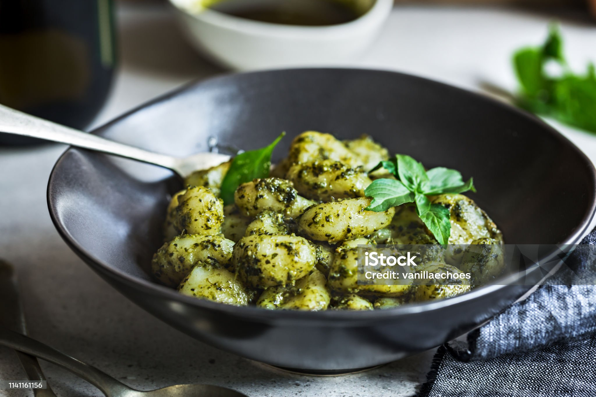

| Ingredients: | |
|---|---|
| Potato Gnocchi - 1 lb | |
| Basil Pesto - 1/2 cup | |
| Parmesan Cheese - Grated or shaved, for serving | |
| Reserved Pasta Water - 2 to 3 tablespoons | |
| Salt and Black Pepper |
Why do I love pad thai so much? First of all, the taste. All your favorite meats and veggies tossed with delicous noodles in a perfect peanut sauce. It has so many things I love about Asian food. Second would be the memories. The Thai restaraunt my hometown has the best pad thai I've ever tasted. And that restaraunt was always the place we would go to celebrate big events. Whether it was somebody's birthday or someone was graduating from school, we'd always go get Thai food and I would always get pad Thai.
| 4 Tbsp Fish sauce |
| 4 Tbsp Sugar |
| Tamarind paste |
| lime juice |
| Rice wine vinegar |
| Chili sauce |
| Rice sticks |
| Oil |
| Garlic |
| Tofu |
| Powdered shrimp |
| Chicken |
| Eggs |
| Turnip |
| Shrimp |
| Bean sprouts |
| Peanuts |
| Scallions |

A classic breakfast option in Taiwan using crepe on top of whisked eggs.
| 80g of Cake Flour |
| 20g of tapioca starch |
| 150g water |
| 1/2 teaspoon of salt |
| 1 green onion chopped |
| 3 eggs |